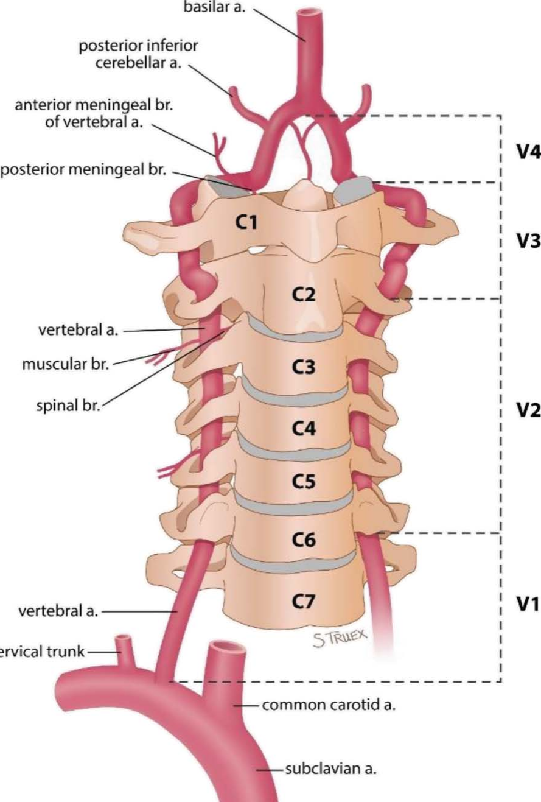
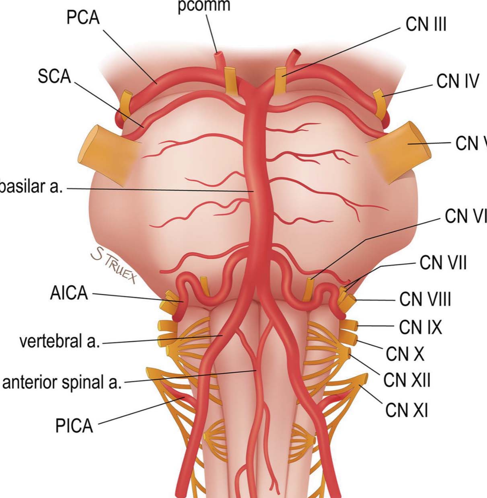
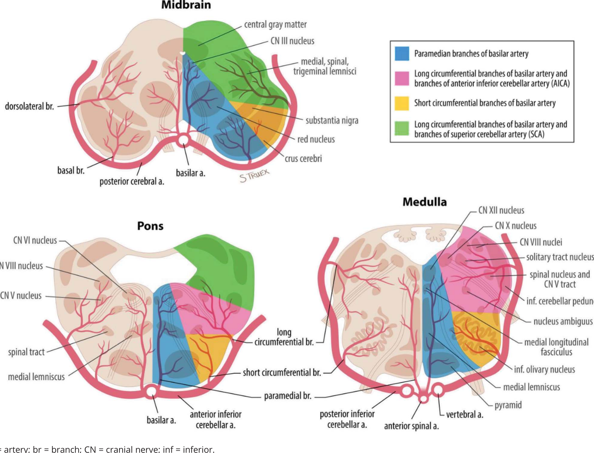
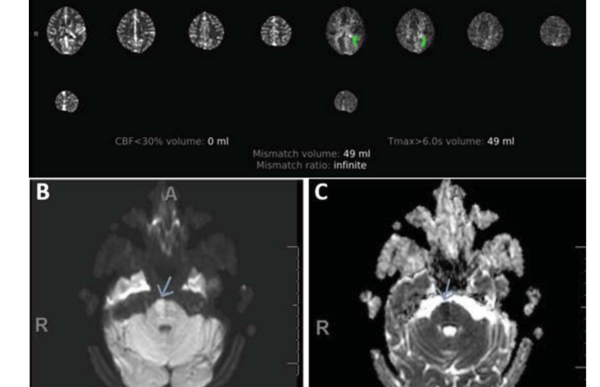
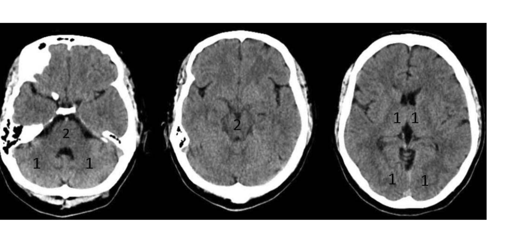
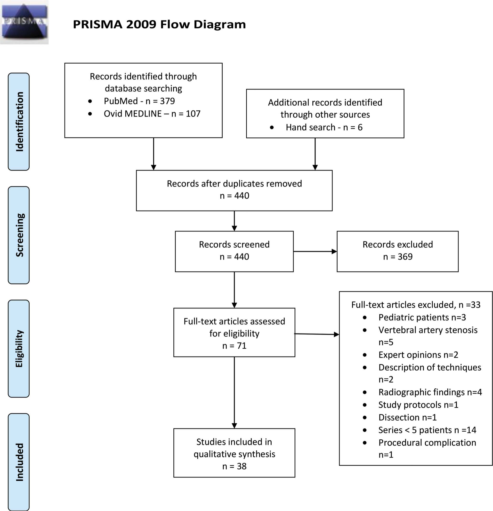
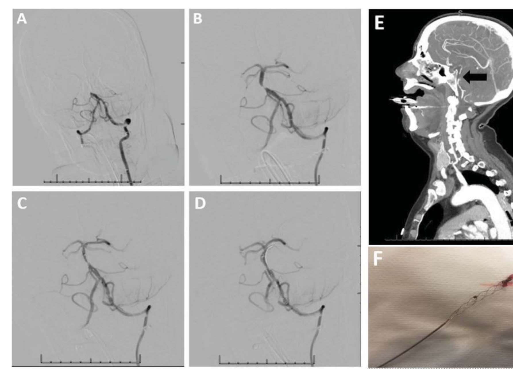

本ページで使用する略語一覧
| 略語 | 正式名称 — 日本語訳 |
| PCI | posterior circulation ischemia — 後方循環（椎骨脳底動脈系）の虚血 |
| ACI / AC | anterior circulation ischemia / anterior circulation — 前方循環（内頚動脈系）の虚血 / 前方循環 |
| AIS | acute ischemic stroke — 急性虚血性脳卒中 |
| LVO | large vessel occlusion — 主幹動脈閉塞 |
| VA | vertebral artery — 椎骨動脈（V1〜V4の4区域） |
| BA / BAO | basilar artery / basilar artery occlusion — 脳底動脈 / 脳底動脈閉塞 |
| PCA | posterior cerebral artery — 後大脳動脈 |
| PICA / AICA / SCA | posterior / anterior inferior cerebellar artery, superior cerebellar artery — 後下・前下・上小脳動脈 |
| SA | subclavian artery — 鎖骨下動脈 |
| ICAD | intracranial atherosclerosis disease — 頭蓋内動脈硬化症 |
| VBD | vertebrobasilar dolichoectasia — 椎骨脳底動脈の延長拡張蛇行症 |
| IVT | IV thrombolysis — 経静脈的血栓溶解療法（rt-PA静注） |
| IA-PT / IAT | intraarterial pharmaceutical thrombolysis / intra-arterial therapy — 動注血栓溶解 / 動脈内治療 |
| MT / EVT | mechanical thrombectomy / endovascular thrombectomy — 機械的血栓回収 / 血管内血栓回収療法 |
| AT | antithrombotic treatment — 抗血栓療法（抗血小板・抗凝固） |
| CTA / CTP | CT angiography / CT perfusion — CT血管造影 / CT灌流画像 |
| DWI | diffusion-weighted imaging — 拡散強調画像（MRI） |
| pc-ASPECTS | posterior circulation ASPECTS — 後方循環版アルバータ早期CTスコア（10点満点） |
| BATMAN | Basilar Artery on CT Angiography score — 側副血行・血栓量を加味した予後予測スコア（10点満点） |
| NIHSS | National Institutes of Health Stroke Scale — 脳卒中重症度スケール |
| mRS | modified Rankin Scale — 修正Rankinスケール（0〜2＝良好、機能予後評価） |
| sICH | symptomatic intracerebral hemorrhage — 症候性頭蓋内出血 |
| SAH | subarachnoid hemorrhage — くも膜下出血 |
| TICI | Thrombolysis in Cerebral Infarction — 再灌流grade（2b〜3＝良好再灌流） |
| SNIS | Society of NeuroInterventional Surgery — 米国脳神経血管内外科学会 |
| AHA | American Heart Association — 米国心臓協会 |
| OR / RR / CI / PPV | odds ratio / risk ratio / confidence interval / positive predictive value — オッズ比 / リスク比 / 信頼区間 / 陽性的中率 |
SECTION 1 後方循環虚血とは — 頻度と予後の悪さ
虚血性脳卒中の15〜20%が後方循環、しかも予後は悪い
米国の脳卒中年間発症は約79.5万件で死因第5位、年14.6万人以上（19人に1人）が死亡する。脳卒中の87%は虚血性だが、すべてが同等ではない。主幹動脈閉塞（LVO）の存在は有意に予後を悪化させる。LVOの最も一般的な定義には頭蓋内内頚動脈・中大脳動脈近位部（M1）・M2・脳底動脈（BA）が含まれ、椎骨動脈（VA）・後大脳動脈近位部・前大脳動脈近位部は分類により扱いが分かれる。
分類にもよるが、血管造影研究ではLVOは急性虚血性脳卒中（AIS）の31〜46%を占め、TIAでは13%にとどまる。一方で、椎骨脳底動脈系（後方循環）に起因するのはAISの15〜20%に過ぎないが、そのうち68〜80%が不良な転帰をたどる。後方循環は「頻度は低いが、ひとたび重症化すると致命的」という疾患群である。
後方循環が占める割合
不良な転帰となる割合
LVOが占める割合
SUMMARY 第Ⅰ章のキーメッセージ
SECTION 2 後方循環の血管解剖 — VAの4区域とBAの分枝
大動脈弓 → 4本の頭頚部血管 → 椎骨脳底動脈系
脳循環は通常、大動脈弓から起こる3本の大血管（腕頭動脈、左総頚動脈、左鎖骨下動脈）に由来する。腕頭動脈は起始後すぐ右総頚動脈と右鎖骨下動脈に分岐する。最も一般的な構成では、脳は4本の頭頚部血管（左右の内頚動脈と左右のVA）から直接灌流される。椎骨脳底動脈系は左右2本のVAと、対をなさない1本のBAから構成される。
VAはその走行に沿って4区域に分けられる（下表）。頭蓋内に入ったVA（V4）は同側の後下小脳動脈（PICA）を分枝した後、椎骨脳底動脈合流部で対側VAと合流し、橋の基部でBAを形成する。BAは脳幹・小脳の大部分・内側側頭葉・後頭葉への主たる動脈供給源であり、両側の前下小脳動脈（AICA）・多数の橋動脈・対をなす上小脳動脈（SCA）を分枝し、中脳近位部で左右の後大脳動脈（PCA）に分かれる。PCAはWillis動脈輪の一部である後交通動脈と連結し、必要時に重要な側副路となる。
| VA区域 | 走行 | 臨床的ポイント |
|---|---|---|
| V1 前孔部・椎骨前 | 鎖骨下動脈の第1分枝として起こり、後方へ走り第6頚椎の横突孔に入る | 動脈硬化の好発部位 |
| V2 椎骨内 | 横突孔内を上行。周囲筋への小さな頚部筋枝を分枝 | 動脈硬化は稀 → 解離を疑う |
| V3 硬膜外 | 軸椎の横突孔を出て外側へ、C1横突孔→環椎後弓→後頭下三角を経て大孔へ | 可動性が高く解離に脆弱 |
| V4 硬膜内 | 大孔から頭蓋内へ。PICAを分枝し合流部でBAを形成 | 動脈硬化の好発部位 |



SECTION 3 後方循環の正常解剖学的変異
後方循環は変異が非常に多い — 治療計画の前提
椎骨脳底動脈系とその分枝には大きな解剖学的変異がある。左右非対称なVAは人口の2/3超に存在し、人口の50%でWillis動脈輪の完成度に何らかの変異がある。たとえばペルシュロン動脈（artery of Percheron）は、片側PCAから単一の動脈幹が起こり両側視床と中脳を灌流する稀な変異である。その他、VA・BAの開窓、PCAの胎児型起始、AICA–PICA変異、さらに後交通動脈の発達に伴い通常退縮する胎児性頚動脈–脳底動脈吻合の遺残（遺残三叉神経動脈・遺残舌下神経動脈・前環椎間動脈・遺残耳動脈）がある。
後方循環の変異解剖を理解することは、脳卒中の病因を定義し、外科・血管内治療を計画するうえで必須である。codominant（同程度に優位）な片側VAの閉塞は、対側VAやWillis動脈輪からの代償により無症候のことが多く、これも変異理解の重要性を裏づける。
SUMMARY 第Ⅱ章のキーメッセージ
SECTION 4 危険因子 — 前方循環と「似て非なる」
危険因子は前方循環と大半が共通、男性・糖尿病だけが後方優位
臨床医はしばしばPCIを前方循環虚血（ACI）と別個に捉えるが、MRIで確認したPCI・ACI連続2,245例（中国人集団）の観察研究は、両者は病因・危険因子の点で「違うより似ている」と結論した。いずれの群でも高血圧が最も頻度の高い危険因子（47.9%）であった。多変量解析で、ACIよりPCIでリスクが高いと同定されたのは2因子のみ：男性（OR 1.392、95%CI 1.085–1.786）と糖尿病（OR 1.667、95%CI 1.275–2.180）。その他の危険因子の頻度は両群で同等であった。アジア・アフリカ・ヒスパニック系は頭蓋内動脈硬化症（ICAD）のリスクが高い。
SECTION 5 病因 — 動脈硬化と塞栓が二大機序
レジストリにより「最多の病因」は分かれる
観察研究ではPCI・ACIともに最頻の病因は小動脈閉塞（PCI 37.6% vs ACI 37.1%）であった。一方、複数レジストリを統合したレビューでは、PCIの最多病因は大血管動脈硬化（35%）、心原性塞栓18%、小血管病13%、原因不明15%であった。後方循環の大血管動脈硬化は、血行力学的破綻（PCIの32%）のほか、in situ血栓や動脈–動脈血栓塞栓を介して虚血を起こす。危険因子を是正せずに放置すると、症候性ICADは指標脳卒中後2年で25〜30%という高い再発リスクを負う。
New England Medical Center後方循環レジストリでは、塞栓が最多機序でPCIの40%（心原性24%、動脈内14%、心原性+動脈性の双方2%）を占めた。ただし前方循環（両側内頚動脈）が脳血流の82%を受け、VAは残り18%にとどまるため、心原性塞栓は本来前方へ流れやすい。実際、心原性塞栓はPCI（5.4%）でACI（13.3%）より有意に少なかった（OR 0.373、95%CI 0.245–0.566）。PCIで動脈–動脈塞栓を受けやすい部位は頭蓋内VA・PICA・遠位BA・SCA・PCA分枝である。
| 病因（統合レジストリ） | 割合 | 補足 |
|---|---|---|
| 大血管動脈硬化 | 35% | 血行力学的破綻はPCIの32%。好発はV1・V4・BA |
| 心原性塞栓 | 18% | PCIではACIより少ない（5.4% vs 13.3%、OR 0.373） |
| 小血管病 | 13% | 観察研究では小動脈閉塞が最頻（PCI 37.6%）との報告も |
| 原因不明 | 15% | — |
SECTION 6 椎骨脳底動脈延長拡張症（VBD）
BAの延長・拡張・蛇行 — 偶発所見にも致命的合併症にもなる
VBDはBAの延長・拡張・蛇行を指す用語で、頭蓋内動脈延長拡張症の80%がBAに生じる。男性・加齢・高血圧・喫煙・治癒した限局性動脈解離・放射線治療歴・結合組織疾患・粘液腫塞栓・感染、さらに弾性線維を侵す疾患（Marfan症候群・蛇行症候群）や中膜の筋細胞を侵すライソゾーム蓄積症（Fabry病・Pompe病）など、広範な危険因子・病因が提唱されている。
VBDは偶発所見にとどまることも、臨床症状を呈することもある。推定5年合併症リスクはAIS 17.6%、脳幹圧迫 10.3%、TIA 10.1%、脳出血（ICH）4.7%、水頭症 3.3%、くも膜下出血（SAH）2.6%で、推定5年致死率は36.2%。治療は臨床像と重症度により、血圧管理・抗血栓療法・血管内手技・外科手術が選択肢となる。圧迫症状を呈する患者への血管内治療は有益でない可能性がある。
（VBD合併症で最多）
うちBAが占める割合
致死率
SECTION 7 後方循環の動脈解離
頭痛・頚部痛・外傷歴があれば椎骨動脈解離を疑う
VAの中間部（横突孔に入ってからC1の輪を巻くように走行し、硬膜への固定された入口に至るまで）は可動性が高く、解離に脆弱である。VA解離は特発性にも、頚部外傷の結果としても起こる。解離は通常、上位頚椎を巻くように走るV3区域に多く、ときにV2区域（典型的にはC5・C6で椎骨列に入る部分）に生じる — すなわちV2・V3が好発部位である。若年成人では頚部動脈解離が脳卒中の約15%を占める。頭痛・頚部痛・外傷歴や頚部手技の既往を伴うPCIではVA解離を疑う。VA解離の約10%は頭蓋内へ進展し、頭蓋内進展は解離性動脈瘤形成・SAH・死亡のリスクが高い。
SUMMARY 第Ⅲ章のキーメッセージ
SECTION 8 動揺性の前駆症状 — 「突然発症」の常識を裏切る
固定した麻痺の前に、増悪寛解を繰り返す前駆症状がある
PCIの臨床像は認識が難しい。大多数が固定した神経脱落の前に、増悪と寛解を繰り返す前駆症状（最も多いのは脳卒中の2週間前までのめまい・嘔気・頭痛）を呈する。これはAISの本質とされる「突然発症」の常識を裏切る。PCIの約1/4はTIAが先行する。さらに、めまい・頭痛・意識変容・嘔気・運動失調といった非特異的症状はしばしばstroke mimicとして片づけられ、診断が遅れる。ACIとPCIの症状には大きな重複があり、局在診断をさらに難しくする。
SECTION 9 deadly Ds と所見の頻度・的中率
頻度の高い症状と、的中率の高い「交叉性」所見は別物
PCIに関連する症状は古典的に「deadly Ds」（dizziness めまい・dysphagia 嚥下障害・diplopia 複視・dysarthria 構音障害・dystaxia 運動失調）として教えられる。交叉性所見（例：同側の脳神経症状＋対側の感覚・運動障害）の急性発症はPCIの古典像である。407例の観察研究では最頻症状はめまい47%・片側上下肢筋力低下41%・構音障害31%・頭痛28%・嘔気/嘔吐27%であった。
一方、PCIの診断を強く支持する（陽性的中率 PPV が高い）のは頻度の低い所見である：Horner症候群（PPV 100%、OR 4.00）・交叉性感覚障害（PPV 100%、OR 3.98）・四分盲（PPV 100%、OR 3.93）・動眼神経麻痺（PPV 100%、OR 4.00）・交叉性運動障害（PPV 92.3%、OR 36.04） — いずれも感度はごく低い（1.3〜4.0%）。「頻度が高い症状＝非特異的、特異的な所見＝低頻度」という非対称を理解することが、見逃し防止の鍵になる。
| 最頻症状（407例） | 頻度 | PCIに特異的な所見 | PPV / OR |
|---|---|---|---|
| めまい | 47% | Horner症候群 | 100% / 4.00 |
| 片側上下肢筋力低下 | 41% | 交叉性感覚障害 | 100% / 3.98 |
| 構音障害 | 31% | 四分盲 | 100% / 3.93 |
| 頭痛 | 28% | 動眼神経麻痺 | 100% / 4.00 |
| 嘔気/嘔吐 | 27% | 交叉性運動障害 | 92.3% / 36.04 |
SECTION 10 鎖骨下動脈盗血症候群と弓矢（bow hunter）症候群
鎖骨下動脈盗血症候群：VAは左右の鎖骨下動脈（SA）から起こる。近位SAの狭窄・閉塞があると、同側VAを通る血流が逆流して後方循環から血流を「盗む」。古典像は労作時の片側腕痛＋後方循環症状（めまい・回転性めまい・構音障害、ときに四肢労作で失神）。身体所見では左右の収縮期血圧差≥10 mmHg、患側の脈の減弱・遅延、鎖骨上窩の血管雑音が示唆的。40〜50 mmHg超の著明な血圧差は症状・完全盗血・治療の必要性と関連しやすい。
弓矢（bow hunter）症候群：頭部回旋時のVAの動的な機械的閉塞・狭窄による椎骨脳底動脈不全。圧迫は高齢者ではC1-2やC5-7の頚椎骨棘、若年ではC1-C2の過可動性によることが多い。対側VAからの代償血流の量で症状は様々で、一過性のことも、持続することも、塞栓・血栓形成による脳卒中に至ることもある。固定を伴わない外科的除圧が安全で信頼できる選択肢と報告されている。
SUMMARY 第Ⅳ章のキーメッセージ
SECTION 11 モダリティ — 単純CTの限界とMRI gold standard
単純CTは後頭蓋窩で当てにならない、DWI/CTPで感度85%へ
正確な臨床診断が難しいため、PCIの診断では画像が決定的に重要になる。単純CTは頭蓋底からのbeam hardeningにより後頭蓋窩の虚血同定率が20%程度まで低下する（単純頭部CTがPCIを同定するのは21%）。造影CTA はLVOを正確に検出でき診断を助ける。CT灌流（CTP）は前方循環で梗塞コアと虚血ペナンブラの予測に成功しており、後方循環でも有望だが、最適な灌流閾値のエビデンスは乏しく、頭蓋底・眼窩のアーチファクトでコア・ペナンブラ体積の正確な算出が制限される。
MRIはPCI検出のgold standardで、拡散強調画像（DWI）は脳幹の早期虚血すら描出でき、DWI-MRIやCTPは感度を85%まで上げる。遅い時間枠で来院した患者では特に考慮する。ただしMRIは救急で常に利用可能とは限らない。カテーテル血管造影は侵襲的で、通常は診断より治療目的に留保される。LVO疑いでcone beam CTにより頭蓋内出血を除外してから侵襲的造影を行う「アンギオ室への直接搬送」プロトコルは、ワークフロー時間短縮と良好転帰の可能性を高める戦略となりうる。

SECTION 12 予後予測スコア — pc-ASPECTS と BATMAN
後方循環版の10点スコアで機能予後を予測する
機能予後を予測するため、後方循環版の10点満点 pc-ASPECTSが導入された。減点対象の血管領域は中脳・橋・両側視床・両側小脳半球・両側皮質PCA領域で、橋と中脳の早期虚血変化は各2点、その他（視床・小脳半球・PCA領域）は各1点を減点する。単純CTから算出したスコアは情報量に乏しいが、CTAやCTPのソース画像から算出すると有望である。
同じく10点満点の画像スコアであるBATMANスコアは、側副血行の有無と血栓量を組み込んでBAOの臨床転帰を予測し、低いBATMANスコアは不良転帰と関連する。
| スコア | 構成 | 解釈 |
|---|---|---|
| pc-ASPECTS 10点満点 | 橋・中脳＝各2点、両側視床・両側小脳半球・両側皮質PCA領域＝各1点を減点 | CTA/CTPソース画像での算出が有望 |
| BATMAN 10点満点 | 側副血行の有無＋血栓量を加味 | 低スコア＝不良転帰と関連 |

SUMMARY 第Ⅴ章のキーメッセージ
SECTION 13 治療の歴史 — IVTと動注血栓溶解（IA-PT）
PCIはrt-PA確立試験にほとんど組み入れられなかった
IV rt-PAの安全性・有効性を示した初期RCTでは、PCI症例の組み入れはわずかであった（NINDS試験で5%、IST-3で8.1%）。急性BAOに対する動注血栓溶解（IA-PT）は1980年代初頭から用いられ始めた。IVT と IA-PT を比較した系統的解析は両群で同等の転帰を報告した。一方、症例集積の遅さとウロキナーゼの入手困難で早期中止されたRCTは、血栓溶解なしと比べIA-PTを受けたBAO患者で良好な転帰を報告した。新世紀の初頭までに、初期世代の劣ったMTデバイスやIA-PT（架橋療法あり/なし）を用いた急性BAOの観察研究が複数行われ、再開通率62.5〜92%と良好転帰・生存改善の傾向を示したが、症候性頭蓋内出血（sICH）は0.9〜18%であった。
本章後半は、PRISMA準拠の系統的レビュー（PubMed・Ovid MEDLINEを2009年1月〜2020年10月で検索、最終的に37報＋国際学会報告のRCT 1報を採用）に基づく。

SECTION 14 BAO観察研究 — BASICS・ENDOSTROKE・BASILAR
2009年BASICS登録の失望から、EVTの有望性を示すレジストリへ
BASICS登録（2002〜2007年に592例のBAOを前向き登録）は、抗血栓療法（AT、n=183）・IVT（n=121）・IAT（n=288）の有効性を比較した多施設観察研究である。全体で68%が不良転帰、死亡率36%、いずれの治療戦略にも統計的優越性は認められなかった。IAT群では62%がIA-PTのみで、MTを受けた患者も現代の優れたデバイスは登録期間中に未使用であった。軽〜中等症（平均NIHSS 10.7）ではIVTよりIATで不良転帰が多く（RR 1.49、95%CI 1.00–2.23）、重症（平均NIHSS 28）では両者同等（RR 1.06、95%CI 0.91–1.22）。重症ではIVTに続くIATの併用が有益にみえた（死亡・依存の絶対リスクはIVT 19%・IAT 10%でATより低い）。AT群の依存・死亡率は93%に達した。
2009年のBASICS登録の失望的な結果の後、複数の症例集積・観察研究がBAOにおけるEVTの有益性を検討した。2015年のENDOSTROKE試験（EVTを受けたBAO 148例）では良好転帰（mRS 0–2）34%・死亡率35%。1970〜2015年の系統的レビュー（IA-PT 642例 vs IA-MT 1,300例、計1,942例）では、IA-MT群で死亡率が有意に低く（36.0% vs 50.3%）、3か月良好転帰もIA-MT群で得られやすく（OR 1.24、95%CI 1.004–1.53）、部分/完全再開通もIA-MT併用で得られやすかった（OR 1.4、95%CI 1.13–1.73）。介入後sICHの率に差はなかった（OR 1.05、95%CI 0.76–1.45）。
2019年のメタ解析（最新の治療法に重点）では、加重プール死亡率はIVT群43.16%・IA-PT群45.56%・EVT群31.40%、3か月良好転帰（mRS 0–2）はIVT群31.40%・IAT群28.29%・EVT群35.22%であった。サブ解析でステントリトリーバーと血栓吸引で臨床転帰・安全性に差はなかった。BASILAR群の非ランダム化前向きコホート（2014〜2019年に中国で症候性急性BAO 829例を登録）では、内科治療＋EVT（n=647）が内科治療単独（n=182）より良好で、90日mRS 0–3が高く（補正OR 4.70、95%CI 2.53–8.75）、90日死亡率が低かった（補正OR 2.93、95%CI 1.95–4.40）— sICHは増加した（7.1% vs 0.5%）。
| 研究 | 対象 | 主要結果 |
|---|---|---|
| BASICS登録 n=592、2009 | AT 183 / IVT 121 / IAT 288 | 68%不良転帰・死亡率36%・治療間に優越性なし。AT群は依存/死亡93% |
| ENDOSTROKE n=148、2015 | EVTを受けたBAO | 良好転帰（mRS 0–2）34%・死亡率35% |
| SR 1970–2015 n=1,942 | IA-PT 642 vs IA-MT 1,300 | 死亡率 IA-MT 36.0% vs IA-PT 50.3%。良好転帰 OR 1.24（1.004–1.53） |
| メタ解析 2019 | IVT vs IA-PT vs EVT | 死亡率 EVT 31.40% が最低。良好転帰 EVT 35.22% |
| BASILAR n=829、非RCT | 内科＋EVT 647 vs 内科 182 | 90日mRS 0–3 補正OR 4.70。死亡 補正OR 2.93。sICH 7.1% vs 0.5% |

SECTION 15 BAOのRCT — BEST・BASICS trial の苦闘
クロスオーバーと組み入れ難で、RCTは主要評価で差を示せなかった
前方循環では現代のEVTがLVO例の障害・死亡を減らす優越性を示したが、MTの有効性を確立したRCTのうち後方循環LVOを組み入れたのはTHRACEのみ（試験集団の1%）であった。急性BAOでMTによるEVTの有益性を示したRCTはなく、報告された2件のRCTも治療群間の過剰なクロスオーバーと不良な組み入れに阻まれた。
BEST試験（中国28施設、発症8時間以内の椎骨脳底動脈閉塞をEVT＋標準内科 vs 標準内科に1:1割付）は、131例の登録後に過剰なクロスオーバーと登録低下で早期中止された。主要評価（90日mRS 0–3）は介入群42%（28/66）vs 対照群32%（21/65）、補正OR 1.74、95%CI 0.81–3.74で有意差なし（介入群で71%が良好再灌流 mTICI 2b/3 を達成、83%でステントリトリーバー使用）。内科群の22%が結局EVTを受けた。クロスオーバーの影響を評価するas-treated解析では介入で良好転帰が高かった（47% vs 24%、補正OR 3.02、95%CI 1.31–7.00）。VA閉塞は内科で、BAOは介入で良い傾向。90日死亡は両群同等（33% vs 38%）。
BASICS試験（多施設・非盲検・第Ⅲ相、last known wellから6時間以内のBAOでIVT後の追加IATの有効性・安全性を検証）は、2011〜2019年に300例を登録したが、EVT優越を確信した多くの医師がBAO患者をIVT単独へ割付けることに消極的で登録が難航した。最終結果もEVTは最良内科管理を上回れず（絶対リスク減少6.5%）、主に対照群が予想以上に良好だったことによる。ただしEVTは70歳超やNIHSS≥10で有効な傾向で、軽症（NIHSS<10）では最良内科管理がより良い選択肢となりうると結論した。EVTは安全で、介入群のsICHは3日以内で3.9%のみ。BAOCHE試験（発症6〜24時間）は2021年12月に完了予定とされた。
SECTION 16 予後予測因子 — 再開通・側副・NIHSS
再開通が転帰と生存の最重要予測因子
PCIの転帰予測因子はACIより明確でない。観察研究・系統的レビュー・メタ解析と2件のRCTは、選択された急性BAO患者でEVTが転帰を改善しうることを示した。BASIC登録の解析では75歳以上のBAOは不良転帰リスクが高いが、それでも22%は良好転帰を得た。後ろ向き症例集積の多変量解析では、再灌流までの時間が6時間を超えると良好転帰の可能性が半減（OR 0.47、95%CI 0.23–0.95）、側副血行があれば死亡リスクが80%超低下（OR 0.16、95%CI 0.03–0.87）、再開通成功（TICI 2b–3）でも低下（OR 0.19、95%CI 0.05–0.78）。介入後sICHを来した患者は100%が不良転帰であった。
別の後ろ向き症例集積では、EVTを受けたPCIで良好転帰と関連したのは喫煙（OR 2.61、95%CI 1.23–5.56）・低いベースラインNIHSS（OR 1.09、95%CI 1.04–1.13）・再灌流成功（OR 10.80、95%CI 1.36–85.96）のみであった。BAO連続例の後ろ向き多変量解析では、後方循環側副スコア（OR 1.69、95%CI 1.10–2.60）とNIHSS（OR 0.84、95%CI 0.77–0.93）のみが独立した良好転帰予測因子として残った。治療前CTの高いpc-ASPECTS・BATMANスコアを良好転帰の予測因子とする研究もあるが否定する研究もある。ただしBASILAR前向き登録ではpc-ASPECTS≥5のBAOはEVTで利益を得た。
SECTION 17 ガイドライン推奨と「均衡の喪失」
エビデンスは乏しいが、無治療の悲惨さがEVTを後押しする
エビデンスの乏しさにもかかわらず、学会ガイドラインはPCIでのEVT使用を推奨している。AHAガイドラインは、選択された急性BAO患者へのEVTは妥当でありうる（AHA class IIb、level C–LD）とする。AHAは前方循環LVOでは発症24時間以内の選択例にEVTを推奨するが、PCIでは発症6時間以内に限定している。無治療のBAOの悲惨な転帰を踏まえると、この限定が適切か議論はある。BASICS試験では9時間超で治療した重症脳卒中の不良転帰が報告され、ENDOSTROKEでも9時間超で転帰悪化の傾向がみられAHA推奨を支持する。一方、BASILAR登録は推定閉塞から24時間以内のEVTが良好な機能転帰・死亡率低下と関連すると結論した。
SNISガイドラインは同じ時間制限を設けず、代わりに灌流画像で適切な候補を選択することを推奨する。さらにPCIは動揺性の前駆症状を伴うことが多いため、SNISは脳卒中発症時刻を「最も近い症状クラスタ」に標識することを推奨する。
EVTがなければBAOの死亡率は86%・良好転帰は13%である。ACIのLVOにおけるMTの明確な利益と異なり、PCIには同等の高水準エビデンスがない。それでも、これほど壊滅的な転帰の可能性ゆえ、最近のガイドラインは両循環に同様の治療戦略（IVTとEVT）を示している。前方循環の高水準エビデンスからの外挿でBAOでも血栓回収に利益があるという前提（presumption）が生じ、急性BAOのMTを検証するRCTへの組み入れ機会で「臨床的均衡（equipoise）の喪失」が起きている。低い疾患頻度（全虚血性脳卒中の1〜4%）と曖昧な臨床像（来院・door-to-needleの遅れ）も組み入れの障壁である。本レビューは、BAの再開通が機能転帰・生存改善の重要な予測因子であり、死亡率は高いままだがEVTを受けた約30〜60%で良好転帰が得られうることを示している。
死亡率
良好転帰率
良好転帰が得られうる割合
SUMMARY 第Ⅵ章のキーメッセージ
出典：Novakovic-White R, Corona JM, White JA. Posterior Circulation Ischemia in the Endovascular Era. Neurology. 2021;97(20 Suppl 2):S158–S169.
DOI：https://doi.org/10.1212/WNL.0000000000012808
本資料は教育目的で作成したサマリーです。診断・治療方針の決定には必ず原典をご参照ください。引用文献の詳細は原典の文献欄をご参照ください。
制作：ICU 関谷